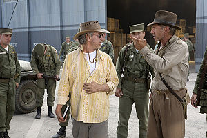
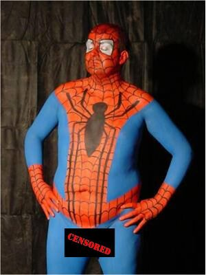
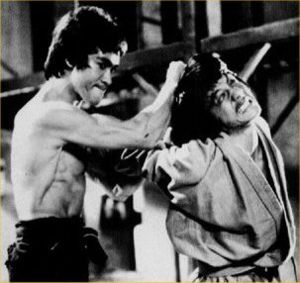

Director de cine
 De: La Frikipedia, la enciclopedia extremadamente seria.
De: La Frikipedia, la enciclopedia extremadamente seria.
A ver, Angelina Jolie te tienes que ir con el de blanco a su caravana para grabar las escenas de riesgo. 
Tarantino dirigiendo su próxima película " para todos los publicos "

Esta escena representa todo el cine Indio.
Espectador despues de ver una película Polaca subtitulada.
 Spielberga y Harrison discutiendo sobre si tiene que haber putas en la pelicula
 Ed Wood intento rodar Spiderman con este tio de protagonista.

George contandole que va a contratar a un carpintero.
 Dialogo " Dime que champu usas !!Perraca¡¡
Un director de cine o cineasta es el ser humano que dirige la filmación de una "pinicula", dando instrucciones a los actores, decidiendo la puesta de cámara, supervisando el decorado y el vestuario, y todas las demás decisiones que hacen que se termine una "pinicula", catering, letrinas. Tambien toma decisiones sobre el encuadre, la selección de actores, las localizaciones y la redacción final del guión, mil páginas.
Version prOn: es el ser humano ex-actorprOn que dirige la filmación de una "obra de arte", dando instrucciones a los actores, decidiendo las posturas de cámara, supervisando el decorado (muy importante) y el vestuario (tambien muy importante), y todas las demás decisiones que hacen que se termine una "pinicula", lubricantes, accesorios de goma, gomas...etc. Tambien toma decisiones sobre el encuadre, que depende del tamaño del actor, la selección de actores...mmm...(los mejores casting de la historia), los diálogos y la redacción final del guión, tres páginas.
Historia y.... acción
Todo empieza con el plagio de un invento de Edison (el Kinetoscopio) por parte de los hermanos gabachos Lumiere que lo cambiaron de nombre y le pusieron cinematógrafo. Tambien inventaron la camara de rodar y 0,7 segundos despues el cine prOn, siendo estos los primeros directores de cine pues en 1895 hicieron la primera función de cine, que fue " Llegada de un tren a la estación ", que provoco que los asistentes salieran huyendo pues pensaban que el tren avanzaba realmente hacia ellos e iva a aplastar sus huecas cabezas, !paletos¡. En un principio los directores no estaban considerados utiles si no mas bien como tecnicos currantes que se les pagaba demasiado por no hacer nada, pero todo eso cambio cuando se estreno " Garganta Profunda " (1972), film que mostro la importancia de las tendencias del director y su posicion frente a las posturas de la vida.
Directores de cine destacados
- Alfred Hitchcock: en aspañol es Alfredo Autoestopene, nacido en Londres (1899) y muerto en Bel Air por el principe (1980), Es el mas grande director de cine, pues ninguna de sus películas a sido emitida en " cine de barrio ". Nunca gano un oscar. Dirigio "Psicosis", "Frenesí", "Con M de Muerte", "Festin diabolico" y "Los pajaros" entre otras, destaca por su vision optimista de la vida y su obesidad mórbida. Fue el famoso creador de la frase " los actores son ganado ".
- Steven Spielberg: americano puro, con películas como, "E.T", "Indiana Jones", "Salvar al soldado Ryan", tambien escribio el guion de Los goonies, gracias a el todo el mundo quiso ser arqueologo o extraterrestre en su niñez. Gran amido de George Lucas y Brian de Palma, este le aconsejo a este que no estrenara "La guerra de las galaxias" porque le parecia una tonteria y no funcinaria en taquilla.
- George Lucas: tambien conocido como "George Juguetitos Lucas", es el mayor productor de juguetes y de vez en cuando dirige alguna película. Para sus films se inspira en hechos cotidianos de la vida como su perro Indiana (Indiana Jones y Chewbaca), ensaimadas (peinado de la princesa Leia). Tenia una imaginacion desbordante, por ejemplo contrato a un carpintero del estudio donde rodaba para que hiciera de Han Solo. No a ganado ningun oscar.
- El Primo Richal: Espiñol nacido en el barrio de las 3000 viviendas, se hizo un sitio en el cine con películas tan destacadas como Los goonies, No mataras al vecino o La princesa prometida. Hace una funcion social difundiendo la vida gitanil, el sexo entre especies y los duelos a espada entre G.I Joes.
- Francis Ford Copula: dirigio El Padrino y Apocalipsis Now, quien mencione El Padrino II sera fusilado por heregia y mal gusto, y quien piense en El Padrino III le caera toda la ira de Steven Seagal. es especialista en adaptar Best Sellers para la gran pantalla, traducción: como no tiene imaginacion se copia de un libro y luego se forra a su costa. Este a ganado tres oscars.
- Peter Jackson: nacio en Nueva Celanda, rodo tres películas basadas en los libro del Señor de los anillos, despues de eso murio. Se cree que se le resucitara para rodar su cuarta y ultima pelicula, llamada " El Hoobit ". Por un millon de dolares decir dos películas dirigidas por este ser que no sean las antes mencionadas..... Mision Imposible (y esta no la a dirigido el).
- Quentin Tarantino: nacio en Knoxville (Jackass), no estudio cine, ni audiovisuales, en vez de el graduado escolar, tiene una etiqueta de anis del mono. Sus películas son obra de una mente enferma, en una noche de drogas y alcohol, donde se termina por satanizar a los negros y judios. Pulp Fiction y sobran las palabras. Ayudo en Sim City y sobran las palabras.
Directores que atentan contra la humanidad
- Edward D. Wood Jr: nacio en Poughkeepsie, ¿?, combatio en la segunda guerra mundial, dos años despues confeso haber combatido vistiendo ropa interior de mujer, dirigio películas que hoy en dia se utilizan para practicar la eutanasia o para torturar presos en Guantanamo, con películas como " Plan 9 del espacio exterior ".
- Mariano Ozores: nacio en Ozores (Marruecos), se especializo en documentales sobre la fauna de Espiña y en las señoras estupendas. Frase de una de sus peliculas: " Señora, le puedo tocar un seno". Films, " Los bingueros ", " Los energeticos " o " La loca historia de los Mosqueteros Gays ".
- Ben Stiller: nacido en N.Y, hijo de p... comicos, es actor. Como director casi acaba con la carrera de Jim Carrey al dirigir la película " Un loco a domicilio ", por lo cual fue internado en el infierno de los hoygan para ser castigado por Hristo Stoichkov.
Frases de Directores
«El cine debe ser antes que nada un divertimento, lo que a menudo se olvida. Es mejor prescindir de la veracidad histórica si con ello se consigue una película formidable, antes que respetarla escrupulosamente y obtener un filme aburrido.»
~ Budd Boeticher rodando el film " Los ninjas de la corte del Rey Arturo contra Robocop y Jesus de Nazaret
«¿Quien se a meado en mi cafe?, !!has sido tu¡¡, Jim pedazo de hijoputa... te vas a enterar ahora...»
~ Ben Stiller antes de enpezar el rodaje de " Un loco a domicilio ".
«Empuja mas fuerte y mas profundo Jonh, como si fueras gay.»
~ Rocco dando instrucciones en su primer film.
«!!Como que no encontrais los guiones¡¡ !!Que no hay copias, no hay nada¡¡, tendré que improvisar algo. Venga ya lo tengo, !!Los Ewoks¡¡, que seran enanos con disfraces de mierda que.....»
~ George Lucas cuando perdio el guion de "El retorno del Jedi"
«¿A qué te refieres con que no tiene sentido meter una escena con un pulpo a la mitad de la película?...»
~ Ed Wood en el cuarto de edición de Plan 9 del Espacio Exterior
Estilos de Dirección
Un director de cine esta totalmente influenciado por cosas tales como su pais de procedencia, el sexo, la raza, lo que desayuno esa mañana, que no sea director en absoluto. Unos claros ejemplos son:
- Director yanki: la película tiene que ser carisima, da igual que sea un corto, siempre tiene que salir alguna bandera americana o un G.I Joe, el protagonista es americano y el malvado tiene que ser chino, cubano, mexicano, negrito o comunista, el cual ejerce dos papeles, traficante de drogas o de armas. En caso de se ruede fuera de los Estados Anidos, por ejemplo en Mexico o Espiña, tiene que parecer que se vive como en 1934, gente en carretas con ropas harapientas, hombres a caballo y si aparece algun coche funciona a vapor.
- Director latinoamericano: la película tiene que ser baratisima (El Mariachi, presupuesto 5400 leros), siempre se tiene que dejar en ridiculo a algun americano o europeo rubio, tienen que aparecer en la película Benicio del Toro, Cheech Marin, Luis Guzman, Danny Trejo o Mario Moreno (Cantinflas), eso es constante como la gravedad. El director latinoamericano tambien cuida los dialogos: - cientifico con carrera de Ingeniero Aeroespacial mirando a un cohete: "Frijoles, el cohete se atoró".
- Director centroeuropeo: de paises como Polonia, Checoslovaquia o Serbia, cine triste con tintes tragicos en una atmosfera asfixiante de desesperacion, lucha humana inutil y felicidad pasajera, para volver a caer en la mayor de las miserias. Los rodajes de estos directores son mas raros que un perro verde (ejemplo: la biografia de Sabonis en un contexto literario de superacion). Siempre en blanco y negro y subtitulado. Directores tan conocidos como Emir Kusturica o Asyorkas Pogoloctitek, que utilizan de actores a gente de la calle.
- Director indio: solo se preocupa de dos cosas en su pelicula, que tenga muchos bailes raroS con musica chunga sin venir a cuento y que el protagonista y la chica terminen enamorados y juntos, entremedias de ellos dos siempre estara un personaje secundario malvado con el pelo engominado que no baila, por eso es el malo. Aqui ya el presupuesto no existe, pagan a los actores, extras, sonido... etc con bocadillos y latas de colaloca.
- Director chino: solo ruedan películas de karate, donde comen mucho arroz, salen muchos chinos con katanas y todo se resuelve con un combate final donde siempre gana el chino bueno, aunque sufre mucho. Efectos especiales como una cuerda atada a la cintura para pegar un salto de 200 metros o espadas de goma que tiemblan mas que la gelatina.
La noticia
- "Un director de cine alemán, bastante criticado por perpetrar películas de baja calidad a pesar de contar con mucho presupuesto, desafio a cuatro de sus maximos detractores en un cuadrilátero de boxeo". Se trata de Uwe Boll, con calzon rojo, 113 kg de peso y 1,94 de estatura, conocido por sus filmes de terror "House of Dead" o "Alone in the Dark", quien se enfrentó a los periodistas frente a una audiencia de 600 personas en Vancouver, Canadá. Despues de propinarles una paliza, el director los acusó de juzgar sus filmes deslealmente. Ninguno de los criticos superaba los 70 kg de peso...
Autor(es):
- Frikiman
- Alex el Mono
- Alven94
- Bladguer
- Milongas
- Shadowmura
- Generibot
Frikipedia 2005-2016, Licencia
GFDL 1.2 - Extraído por FrikiLeaks